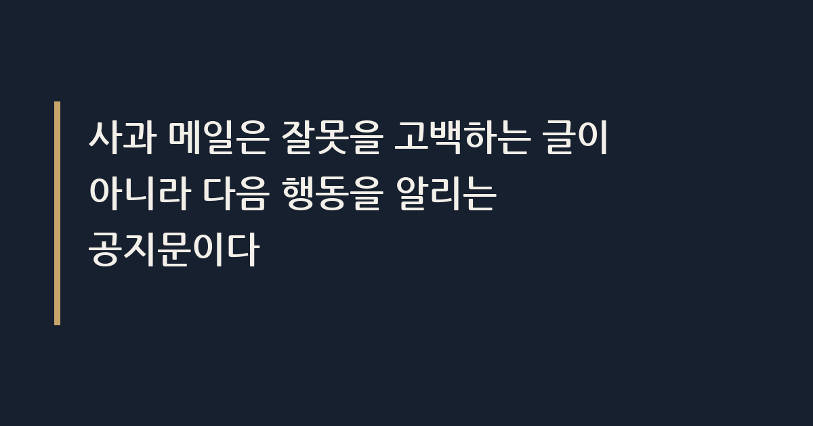
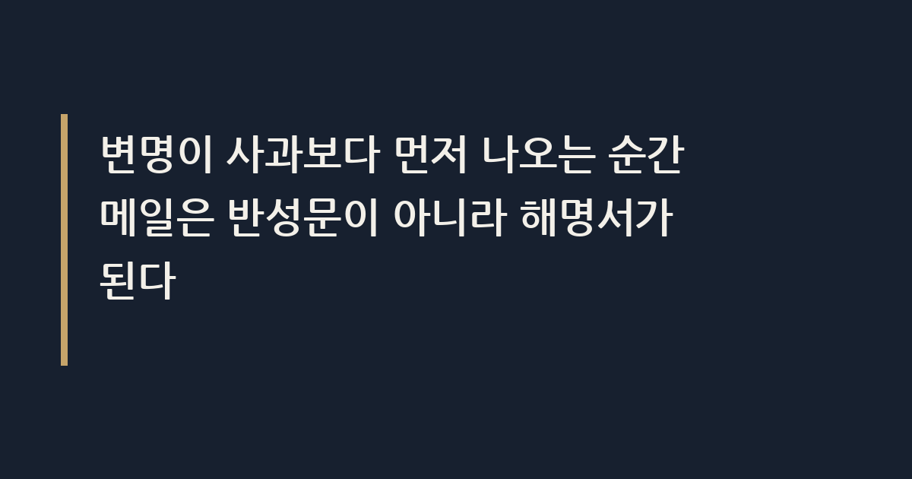

주제 업무 실수 사과 메일 쓰는 법 (evergreen / office)
제목 후보
메타 설명 업무 실수 사과 메일 쓰는 법을 실제 사례로 정리했다. 첫 문장 구성법, 상황별 예시 문장, 자주 묻는 질문까지 담았다.
라벨 사과메일, 업무실수, 직장생활, 메일작성법, 신뢰회복, 직장인필수템, 실수사과메일예시, 거래처사과메일, 상사에게사과메일, 메일첫문장쓰는법, 업무메일작성팁
실용 자산 예시 문장 모음 — 업무 실수 사과 메일은 상황별로 쓸 문장이 다르므로 '이렇게 쓴다/이건 피한다' 대비 예시가 검색 의도에 가장 맞다
발행 전 팩트체크
이미지 (Blogger 편집기에 드래그해 넣으세요)
도입부 사진 · ⓒ StartupStockPhotos / Pexels


지난봄, 팀 후배 하나가 거래처에 보낼 견적서 파일 대신 내부용 원가표를 첨부해서 메일을 보냈다. 받는 사람 칸에는 담당자 셋, 참조에는 그쪽 임원까지 걸려 있었다. 발송 버튼을 누르고 3분 뒤에야 알았다고 했다. 그날 오후 핏기 없는 얼굴로 내 책상 앞에 선 그 후배를 아직 기억한다. 손에는 노트북을 들고, "어떻게 사과 메일을 써야 할지 모르겠다"는 말부터 했다.
업무 실수 사과 메일은 잘못을 고백하는 글이 아니라 다음 행동을 알리는 공지문이다. 이 순서를 바꾸는 순간 메일은 길어지고 신뢰는 짧아진다. 그 후배와 같이 메일을 고쳐 쓴 과정을 오늘 그대로 풀어본다.
사과 메일이란 실수가 일어난 사실과 그로 인한 영향, 그리고 수습 계획을 상대방에게 가장 먼저 알리는 업무 문서다. 읽는 사람 입장에서 생각해 보면 답이 나온다. 바쁜 담당자나 임원은 메일 제목과 첫 두 줄만 보고 '이거 큰일인가 아닌가'를 판단한다. 그 판단이 끝나기 전에 사과 문장이 안 나오면, 읽는 사람은 이미 불안한 상태로 본문을 읽기 시작한다.
그 후배의 첫 번째 초안은 이랬다. "안녕하세요, 다름이 아니라 오늘 오전에 메일을 보내는 과정에서 약간의 착오가 있어 연락드립니다." 세 번째 줄에야 "죄송합니다"가 나왔다. 나는 그 초안을 보자마자 첫 문장과 세 번째 문장을 바꾸라고 했다. 사과가 먼저, 설명은 그다음이다.
그때 후배가 물었다. "근데 선생님, 이렇게 바로 사과부터 하면 제가 너무 다급해 보이지 않을까요." 나는 반대로 말했다. 다급해 보이는 게 문제가 아니라, 다급한 상황에서 침착하게 할 일을 안내하는 게 핵심이라고. 메일을 받는 사람은 보낸 사람의 체면을 걱정해 주지 않는다. 자기가 입을 피해를 가장 먼저 계산한다. 그 계산이 끝나기 전에 "괜찮다, 이미 조치했다"는 신호를 줘야 한다.
실제로 거래처나 상사에게 보내는 사과 메일을 수십 통 고쳐주며 정리한 구성은 아래 네 가지로 압축된다. 순서를 지키는 것이 내용만큼 중요하다.
이 네 가지 중에서 사람들이 가장 자주 빼먹는 건 세 번째, 원인 설명의 길이다. 억울한 마음이 클수록 원인을 길게 쓰고 싶어진다. "사실 이건 제 잘못이라기보다 전달 과정에서..."로 시작하는 문장을 몇 번이나 지워봤는지 모른다. 원인은 한 문장이면 충분하다. 길게 쓸수록 사과가 아니라 재판 기록처럼 읽힌다.
변명이 사과보다 먼저 나오면 신뢰가 깨지는 이유는, 읽는 사람이 문장을 순서대로 '의도'로 해석하기 때문이다. 원인 설명이 먼저 나오면 "자기 잘못이 아니라고 말하려는구나"로 읽힌다. 실제로 그 후배가 처음 쓴 초안을 거래처 담당자 입장에서 소리 내어 읽어봤다. "착오가 있었다"는 표현부터 묘하게 거리를 두는 느낌이 들었다.
반대로 사과를 먼저 적으면, 그다음에 나오는 원인 설명은 '해명'이 아니라 '정보'로 읽힌다. 같은 문장이라도 위치가 바뀌면 받아들이는 사람의 감정이 달라진다. 메일은 말투보다 순서가 태도를 결정한다. 이건 책에서 배운 게 아니라, 거래처 담당자가 전화로 "이번엔 메일이 솔직하게 읽혀서 괜찮았다"고 직접 말해준 뒤로 확신하게 된 원칙이다.
사과 메일은 한 번 보내면 돌이킬 수 없다. 그래서 전송 버튼을 누르기 전에 짧게라도 점검하는 습관이 필요하다. 아래는 그 후배 이후로 팀에서 실제로 쓰는 순서다.
이 다섯 가지를 체크하는 데 걸리는 시간은 길어야 2분이다. 그 2분을 아끼려다 사과 메일을 두 번 보내는 사람을 여럿 봤다. 두 번째 사과 메일은 첫 번째보다 훨씬 더 어렵다.
사과 메일만 보내고 끝내는 사람과, 메일을 보내기 전에 먼저 전화를 거는 사람의 차이는 생각보다 크다. 그 후배의 경우, 내가 메일을 고치라고 하기 전에 먼저 한 조언은 "지금 당장 그쪽 담당자한테 전화부터 해라"였다. 메일은 기록이 남아서 좋지만, 그만큼 상대가 읽을 때까지 시간차가 생긴다. 그 시간 동안 받는 사람은 혼자 상황을 추측한다.
전화로 먼저 "방금 보낸 메일에 문제가 있어서 바로 정정 메일 드릴 예정입니다"라고 알리면, 받는 사람은 메일이 오기도 전에 안심한다. 메일은 그 다음에 기록을 남기는 역할을 한다. 순서로 보면 전화나 메신저가 먼저, 메일이 그 다음이다. 이 순서를 반대로 하면 상대는 메일을 열기 전까지 괜히 더 큰 사고를 상상하게 된다.
상황마다 쓰는 톤이 조금씩 다르다. 아래는 실제로 자주 마주치는 네 가지 상황과, 그대로 옮겨 써도 되는 문장이다.
| 상황 | 이렇게 쓴다 | 이건 피한다 |
|---|---|---|
| 거래처에 잘못된 파일 전달 | "먼저 사과드립니다. 조금 전 발송한 메일에 잘못된 파일이 첨부되어 정정 파일을 재첨부합니다." | "확인해보니 파일에 착오가 있었던 것 같습니다." |
| 상사에게 보고 누락 | "OO 보고를 기한 내 드리지 못한 점 사과드립니다. 지금 바로 정리해 오늘 중으로 다시 올리겠습니다." | "바빠서 미처 챙기지 못했습니다." |
| 마감 지연 | "일정을 지키지 못해 사과드립니다. 완료 예상 시점은 OO일 OO시이며, 중간 진행 상황도 공유드리겠습니다." | "생각보다 작업이 오래 걸렸습니다." |
| 보고서 숫자 오류 | "보고드린 수치에 오류가 있어 정정합니다. 정확한 수치는 아래와 같으며, 검토 과정을 한 차례 더 추가하겠습니다." | "계산 실수가 조금 있었던 것 같습니다." |
대괄호로 성격을 먼저 밝히는 방식이 가장 눈에 잘 띈다. "[사과] OO건 자료 오류 안내"처럼 사건명과 조치를 함께 적으면 수신자가 제목만 보고도 긴급도를 판단할 수 있다. 일반 업무 메일과 섞이지 않게 하는 것이 목적이다.
본문은 한 통으로 충분하다. 다만 참조에 임원이나 타 부서 책임자가 걸려 있다면, 메일을 보낸 직후 담당자에게 짧게 전화나 메신저로 "정정 메일 보냈다"는 사실을 한 번 더 알리는 편이 좋다. 메일만 믿고 넘기면 상대가 메일을 놓쳤을 때 책임 소재가 애매해진다.
사안의 크기로 판단한다. 거래처 영업 손실이나 공식 문서 오류처럼 영향이 큰 경우는 메일 발송 직후 전화나 대면으로 한 번 더 사과하는 것이 관행이다. 메일은 기록을 남기는 용도고, 전화는 관계를 지키는 용도다. 둘 중 한쪽만 챙기면 다른 한쪽이 서운해할 수 있다.
그 후배는 사과 메일을 고쳐 쓴 지 두 시간 만에 거래처 담당자에게서 "괜찮다, 바로 확인했다"는 답장을 받았다. 지금 그 후배는 팀장이 됐고, 가끔 그날 얘기를 하면 웃으면서 메일 한 통 제대로 쓴 덕분에 그 거래처와 지금도 일한다고 말한다. 씁쓸하면서도 꽤 인상적인 기억이다. 실수는 누구나 한다. 메일 한 통이 그 실수를 사건으로 키우기도 하고, 조용히 지나가는 해프닝으로 끝내기도 한다.
Q. 거래처나 상사에게 실수 사과 메일 써본 적, 있으신가요?